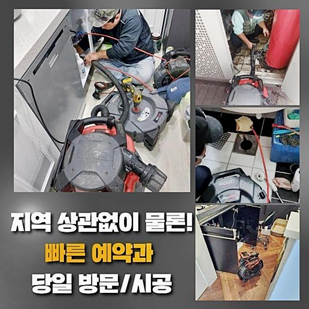
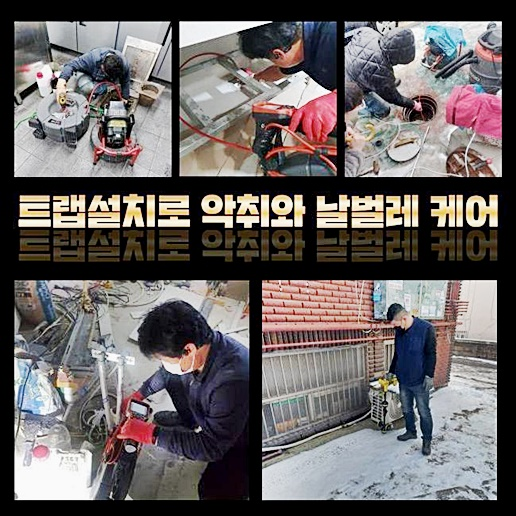
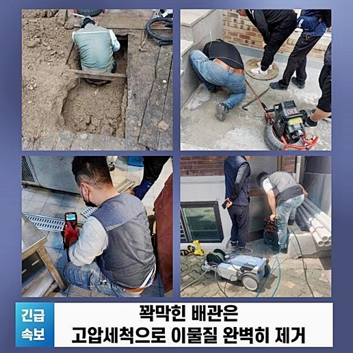
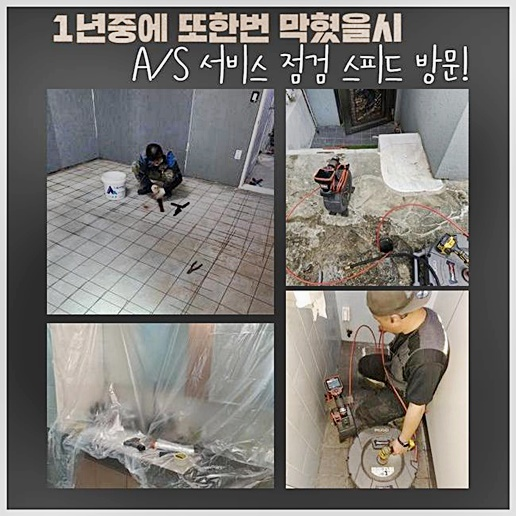
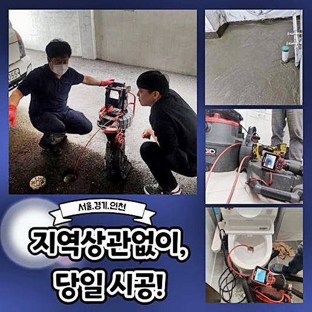
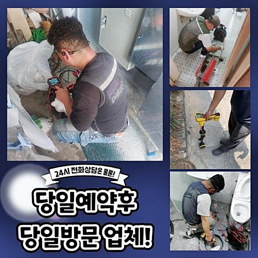

🏠 오전동하수구뚫음 포일동 오수맨홀청소 해결방법
서울 구로구 싱크대막힘 전문 시공 후기

📋 작업 개요
- 위치: 서울 구로구, 구로구, 서울
- 서비스 유형: 싱크대막힘, 하수구막힘, 배관막힘, 맨홀막힘, 뚫는업체, 배관청소
- 작업 일시: 2024. 7. 2. 9:52
- 업체명: 하수구수사대 (010-5615-2118)
🔍 문제 상황
오전동하수구뚫음 포일동 오수맨홀청소 해결방법
싱크대라던지 베란다쪽 생활 중에 상하수도들을 사용하시는 장소인 경우에 반드시 필요한 하수관!
하수관이 막히게되면 일상중에 피해들이 많을 수 밖에요
문제들은 일반적으로 머리카락덩어리와 잔해물이 군데군데 누적되며 발생됩니다
똑같은 모습으로 욕실배관 이라면 배출이 진행되지를 못해서 불편이 증폭되는 경우가 많습니다
금일엔 막혔던 사례를 예시로들어 이럴때 강구해야하는 해결책들을 설명드리고자 합니다
먼저 거주지에서 통수불능의 결함이 생겨나버리면 간단하게 해결할 수 없는 사안이므로 전문적인 접근을 통하여 시정하는게 합리적이에요
보통 물들이 안빠지거나 솟구치는 증상으로 막힘의 문제가 있다는걸 인지할 수 있어요
증상들이 생겼을때에는 무문별한 방법을 통하기보단 신중하게 대처해주셔야 하는데 혹여 방치해둔다면 악취가 생겨나는 등의 불편들이 발발하므로 조속하게 대처해주세요
의뢰인분도 문제를 보시고선 통수불가를 인지하셔서 빨리 저희에게 도움을 청하셨기에 재빨리 작업에 착수할 수 있었어요
찾아뵙고서 점검과정을 실시했는데요 1순위로 통수문제를 관찰했어요
입구부분에서 오수가 잔존하는걸 발견할 수 있었으며 배수도 천천히 흐르는걸 보았는데요

🔎 원인 분석
💡 전문가 진단: 정밀 진단 장비를 사용하여 슬러지의 고착 여부를 판명하고 타격/세척 작업을 실시했습니다.
고객분께선 생각하기론 입구쪽에 잔해가 침전되는 바람에 문제들이 발생한거라 여기고 배관을 청소를 해보셨다고 전해주셨습니다
허나 배수들이 나아지지를 않았고 뚫어뻥등을 이용해주어도 증세가 나아지지를 못해서 저희들을 떠올리게되었다 해주셨어요
배수관을 바로 잡기에 앞서 무엇이 문제인지 알아야합니다
작거나 부유하는 잔여물이 배수구에 끼어서 막혀버리면 판매되고있는 발포제기능을 담당하는 용품을 사용하여 별 어려움 없이 개선되는 때도 있긴한데요
그렇지만 배수관에 슬러지나 석회들이 퇴적되어 생기게된다면 기기를 운용한 다음 단계들을 해주는게 옳은 방식이에요
먼저 석션장치를 써주어 부유물을 흡입했어요
석션장치는 압차를 이용해 부유물들을 배출시켜주는 도구로서 고객님들이 생각하시는 청소장치와 유사하다고 볼 수 있어요
허나 오수들만 빠지게되고 청소해줘야되는 잔해는 배출되지 못해서 첫번째로 하수만 배출시키고 심부까지 들여다보아야 했어요
내시경장비를 투입시켜보았어요
사용해보니 배관 밖으로도 다양하고 어마어마한 이물질들이 관찰되었습니다
석회이물은 사용 중에 포함되어있는 칼슘성분들이 반응하게 되면서 생겨나게되는 잔해의 하나입니다
다른 양상으로 구축물일 경우 시설 상으로 안쪽으로 이렇게 석회 잔여물이 차곡차곡 쌓여요
금일에도 석회들로 인해 문제가 발생하고 통수가 이뤄지지않던 것인데 이런 문제에선 장비와함께 중화제 용품을 써줘야 되는데요

🔧 작업 과정
화학품이라고 한다면 흔히 발포제기능을 담당하는 클리너들을 생각하시는 고객님이 대부분일텐데요
온라인에서 구매가능한 제품만으론 완벽히 해결하는건 어려운데요
중화제 약품을 가용해야합니다
하수관에 잔존해있던 석회이물도 기름기와 동일하게 기간이 경과함에따라 단단하게 굳는 특성이 있어요
그래서 해결에 힘쓰지않으면 막히는 사태가 심해지거나 물이 새는 증상들도 가속화되게되요
오늘도 딱딱해진 석회이물로 배수가 불가한 곳이여서 수월한 해결을 하고자 중화제를 사용하기에 이르렀습니다
오수들은 석션 일련의 과정을 통해 제거시키고 전용 약품들을 사용해 석회이물질을 유화시키는 일련의 과정을 시작했는데요
이렇게 중화약을 운용한 다음 굳어진 이물을 흐물거리게하는 수순을 밟아나가 수월하게 내측을 청소하는것이죠
해당 과정으로 석회이물을 중화시켰으면 곧장 플렉스 샤프트를 가용해주어 벽부분에 위치한 오염물도 청소합니다
하수가 이동하는 배관에 축적된 잔해는 샤프트 장비를 이욯하여 빈틈없이 청소해야 욕실공간을 쓰시며 머리카락뭉치나 작은 잔여물이 흡착되지 않고 출수부로 수월하게 흐르게됩니다
배관에 있던 동시에 석회물질까지 꼼꼼히 제거시킬 수 있어요
제거된 잔해물은 안쪽으로 가라앉지않도록 하수들을 흡입해주었던 석션장비로 흡입 단계들을 실시해요
배출해준다라면 잔재물은 석션장비와 부착된 바구니로 튀지않고 들어가서 안측에 남아있을 일이 없어요
전체에 걸쳐 꼼꼼히 정리해주는 과정이에요
스케일링 단계들을 가용해주어 깨끗히 청소를 끝냈습니다
석회잔해의 경우 상하수도들을 사용하시는 공간일 시 어느곳이든 발생되게됩니다
때문에 하수도를 점검해주고 힘써 예방적 관리를 실시하는게 중요하다라는걸 기억하시기를 부탁드려요
그렇다면 문제가 사라졌는지 확인을 실시했죠
결과를 보니 물들이 시원하게 빠져나가는걸 보았죠
고객님도 고민이 꼼꼼하게 해결되어 드디어 저희에게 고마움을 표현해주시어 저희전문진도 뿌듯하게 철수했어요


✅ 작업 완료
이와같이 수월한 수도이용만큼 중요시 되는건 위생에 문제가 없는 것이죠
계속해서 강조드려도 부족한것처럼 귀찮으셔도 간헐적으로 관리하시면 별다른 문제상황이 벌어지지않고 일상생활을 할 수 있어요
마찬가지로 동일한 증세들이 불거지면 당황보다는, 오늘의 사항들을 참고하신 뒤 깨끗하게 욕실공간을 유지하시기를 부탁드립니다
한시간이내에 어디로든 달려가니 주저없이 의뢰하시면 서둘러 도와드릴게요!
수도사용이 제한되는 상황들! 방치는 금물! 저희의 전문가들과 헤쳐나가보세요!




⚠️ 주방 싱크대 배관 막힘 예방 수칙
- ✅ 기름기가 묻은 식기나 프라이팬은 설거지 전 키친타올로 반드시 기름때를 닦아내세요.
- ✅ 주기적으로 싱크대 개수대에 뜨거운 물을 가득 받아 한 번에 내려 배관 내부 기름을 씻어내세요.
- ✅ 배수구 거름망을 미세한 필터로 사용하시고 음식물 찌꺼기가 틈으로 새어 들지 않게 관리하세요.
- ✅ 베이킹소다와 식초를 뜨거운 물과 함께 일주일에 한 번씩 부어주면 배관 살균과 막힘 예방에 좋습니다.
💡 핵심 정리
- 확실한 장비 작업(내시경 점검 및 샤프트 스케일링)으로 원인을 뿌리 뽑습니다.
- 작업 후 1년 이내에 동일한 부위 재발 시 100% 무상 A/S 서비스를 보장합니다.
- 서울 · 경기 · 인천 전 지역에 24시간 언제든 긴급 출동할 수 있도록 항시 대기 중입니다.
❓ 자주 묻는 질문 (FAQ)
🚨 서울 구로구 싱크대막힘 문제로 고민이신가요?
정확한 원인 진단과 확실한 시공으로 재발 없는 해결을 약속드립니다.
24시간 긴급 출동 | 서울 · 경기 · 인천 전지역 | 1년 내 재발 시 무상 A/S